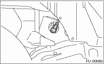
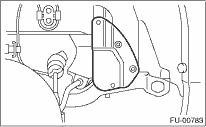
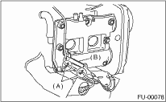
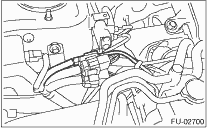

1. Before installing front oxygen (A/F) sensor, apply the anti-seize compound only to the threaded portion of front oxygen (A/F) sensor. This facilitates the next removal.
Anti-seize compound:
NEVER-SEEZ NSN, JET LUBE SS-30 or equivalent
CAUTION:
Never apply anti-seize compound to the protector of front oxygen (A/F) sensor.
2. Install the front oxygen (A/F) sensor.
Tightening torque:
30 N·m (3.1 kgf-m, 22.1 ft-lb)

3. Install the service hole cover.

4. Lower the vehicle.
5. Install the front right side wheel.
Tightening torque:
100 N·m (10.2 kgf-m, 73.8 ft-lb)
6. Connect the engine harness to the bracket (B) using the clip (A).

7. Connect the connector of front oxygen (A/F) sensor.

8. Connect the battery ground cable to the battery.